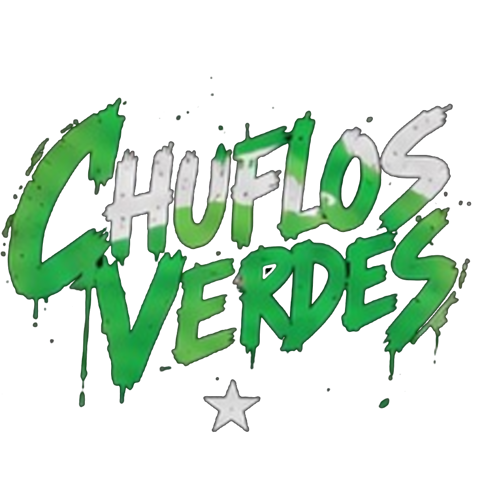

ARCHIVO DE RUIDO Y CARRETERA
CHUFLEANDO
Ensayos, escenarios, caras conocidas y pruebas de que aquí siempre está pasando algo.

ARCHIVO DE RUIDO Y CARRETERA
Ensayos, escenarios, caras conocidas y pruebas de que aquí siempre está pasando algo.